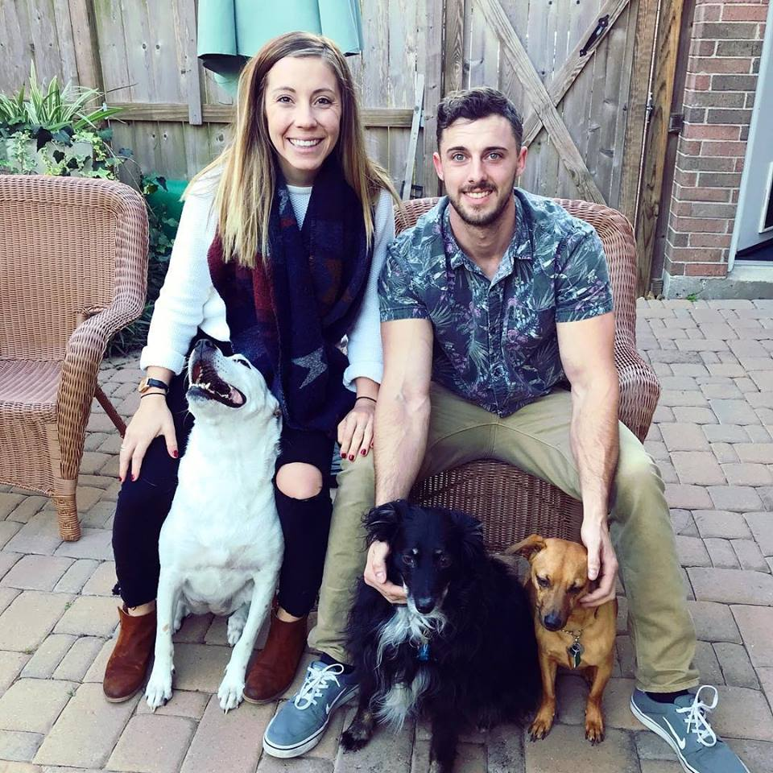

About Me

I grew up in a small town in California, just north of San Jose, called Newark. In highschool I had 2 passions W.O.W and wrestling. I also worked at a Fast Food joint called In-N-Out Burger my junior and senior year. After Highschool I had the opportunity to move to Austin. My father asked me to be the caretaker of his house while he was over-seas.
Moving to Austin was a major paradigm shift for me. I went from living with my mother, stepfather, and younger brother, to having a 4 bedroom house in Westlake all to myself. As expected I had a lot of fun while I attended ACC and Texas State University. After my third year of school I lost interest in academics and focused my attention on working. I floated around different sales/serving jobs but ended up going back to In-N-Out Burger when they came to Austin. While working at In-N-Out I decided I wanted to become a personal trainer. I studied hard and passed my exam I was now a Certified Personal Trainer.
I have been personal training for the past 5 years and loving every second of it. Personal Training helped me to grow as a professioanl as well as a person. It taught me to be patient, to be attentive, to be sympathetic and many other things. About a year into training I met a lady by the name of Amanda Archibeque, and thus we are thrown into another paradigm shift.
I fell in love instantly, her not so much. She was by far the coolest humanbeing I had ever met. She was educated, graduated from ASU, she traveled to third-world countries to help others, she loved to party, but best of all was her smile. We started working out together pretty often but every time I asked her out, I got shot down. A few months into our "gym dates" she had to move back to Arizona. I was extremely sad but I stayed in contact the whole time. After a couple months she talked about moving back to Austin, I was so excited. The day before her drive I called and asked if she had a friend driving with her. She planned on driving by herself so I offered to fly down there and drive back with her. Of course I was just being nice and expecting her to turn me down but to my surprise she said yes.
The drive was 17 hours and it felt like 5. We couldnt stop talking and singing and dancing. By far the best road trip of my life. Once we reached Austin it was like we couldn't leave each others side. Everyday it was just expected that we were going to be hanging out and going on another adventure. A month later we moved in together, now 4 years later we are a strong team, growing and evolving stronger everyday. Because of her I have the means and opportunity to pursue my interest in programming, my next level of evolution, my new future.